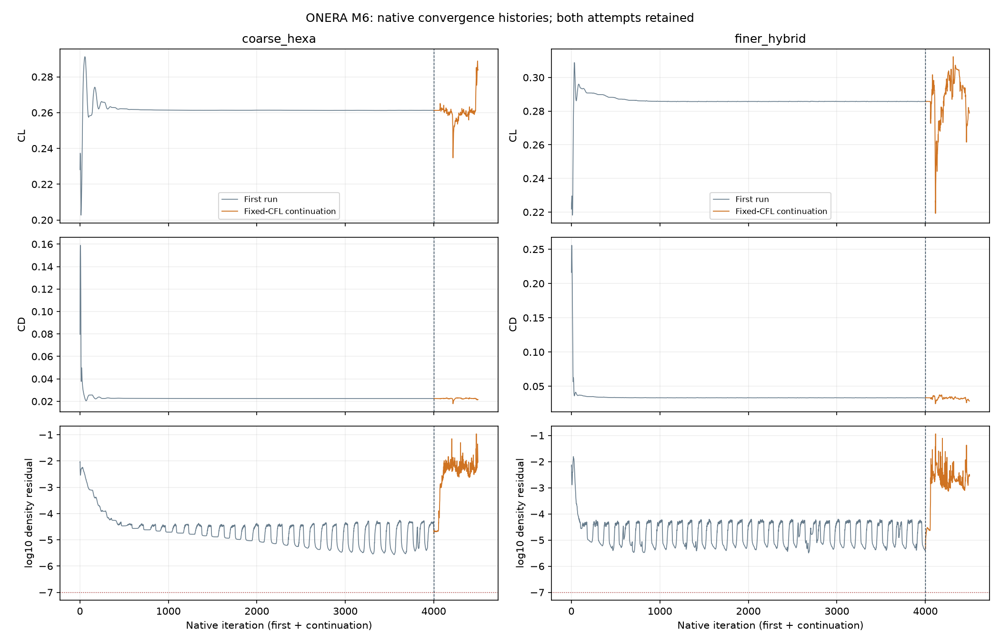
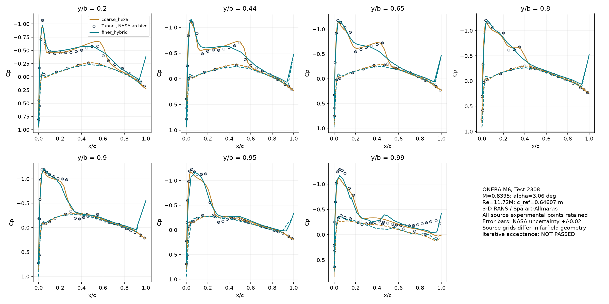
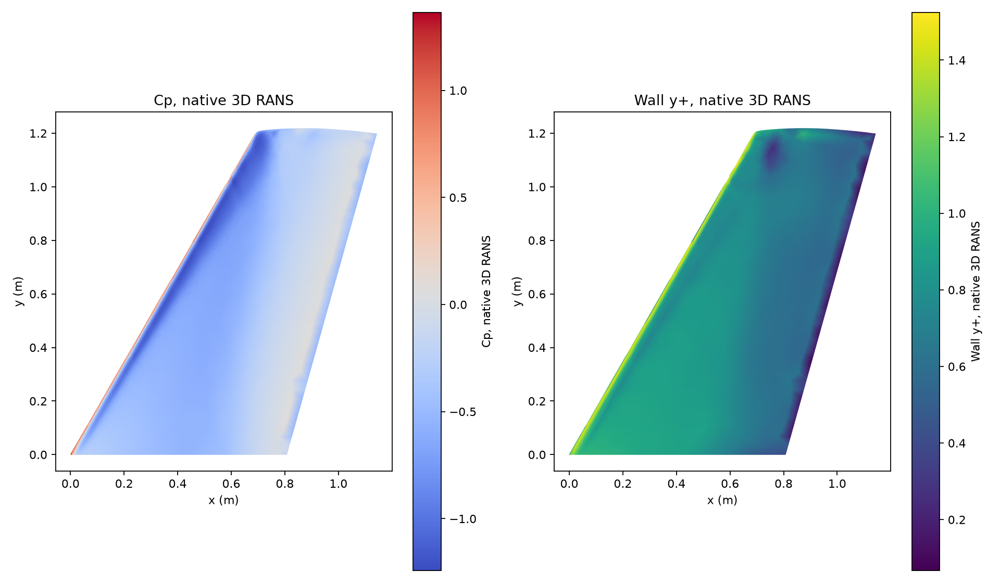

Sonuç: çalışma tamamlandı; kalite kabulü geçmedi / açık
NASA arşivindeki Schmitt–Charpin ONERA rüzgâr tüneli Test 2308 kullanıldı. M=0,8395, alfa 3,06°, beta 0°, Re=11,72 milyon ve Reynolds referans veteri 0,64607 m eşlendi. T=288,15 K SU2 kaynak yapılandırmasının koşuludur; tam türbülanslı SA, adyabatik kaymaz duvar, kökte simetri ve uzakta serbest akım uygulandı. Deney basıncına uyacak biçimde açı veya basınç ayarlanmadı.
| Ağ | Hücre | CL | CD | Cp RMSE | ±0,02 içinde | Max y+ | Süre |
|---|
| coarse_hexa | 43,008 | 0.261266 | 0.022437 | 0.08700 | %35.8 | 13.685 | 483s |
| finer_hybrid | 258,969 | 0.285744 | 0.033107 | 0.15348 | %19.9 | 1.524 | 1407s |
Cp RMSE boyutsuz katsayı hatasıdır; yüzde hata değildir. ±0,02 NASA'nın belirttiği ölçüm belirsizliğidir; bu aralıkta kalan oran tek başına tüm modeli doğrulamaz. CL/CD için bu arşivden deneysel kuvvet verisi kullanılmadı; tablo CFD kuvvetlerini gösterir.
Bu çalışmaya önceden konan birleşik kalite kabulü geçmedi / açık. CL ağ değişimi %9.37, CD değişimi %47.55. Yoğunluk kalıntısı, kuvvetlerin son 100 adım aralığı, max y+<1 ve kesit başına Cp RMSE<0,08 ayrı izlendi. Eşikler sonuç iyi görünsün diye değiştirilmedi.
Tamamlanan çözümlerin yakınsaması
Her ağ önce 4.000 iterasyon çözüldü. Üstteki kuvvet/deney tablosu, süreler ve aşağıdaki basınç/alan görselleri bu tamamlanan ilk çözümlere aittir. Programlar başarıyla bitse de bu çözümler fiziksel kalite kabulünü geçmedi.
| 4.000 adımlık çözüm | log₁₀ yoğunluk artığı (<−7) | Son 100 CL aralığı (<0,0002) | Son 100 CD aralığı (<0,00002) | İteratif kabul |
|---|
| coarse_hexa | -4.626 | 6.49972e-05 | 1.86363e-05 | Geçmedi |
| finer_hybrid | -5.348 | 0.00022468 | 0.00032758 | Geçmedi |
Ek sayısal deneme de kabulü kapatmadı
Aynı ağ ve fiziksel koşullardaki kayıtlı çözümlerden, ağ başına 500 ek iterasyon hedeflendi. Sabit CFL=20, daha sıkı doğrusal çözücü toleransı ve 50. adımdan sonra sabitlenen akı sınırlayıcı kullanıldı. Kaba ağda 500 adım tamamlandı; salınım büyüdü. İnce ağda 497 tam CSV satırı (sıfırdan başlayan son iterasyon 496) kaydedildi ve 900 saniye sınırında süreç durdu. Son yüzey/hacim alanı oluşmadığından ince ağın bu denemesine Cp/y+ sonucu atanmıyor. Bunlar sayısal ayar denemeleridir; deney basıncına uyacak biçimde fiziksel girdi değiştirilmedi.
| Ek deneme | Kayıtlı adım | log₁₀ yoğunluk artığı | Son 100 CL aralığı | Son 100 CD aralığı | Durum |
|---|
| coarse_hexa | 500 | -2.042 | 0.0299155 | 0.00185093 | Çalışma bitti; yakınsama geçmedi |
| finer_hybrid | 497 | -2.559 | 0.0338984 | 0.00793814 | 900 s süre aşımı; son alan yok |

İlk çözüm ve ek denemenin gerçek geçmişleri birlikte gösterilir. Süre aşımı ve başarısızlık saklandı. Tam ek deneme kaydı; kaba ağın ek deneme Cp RMSE değeri 0.22856. Bu tek ağ sonucuyla eksik ince alan eşleştirilmedi.
Tamamlanan çözümlerin deney basınçlarıyla kıyası

İşaret ve kaynak denetiminden sonra tüm 271 nokta karşılaştırıldı; şok yakınındaki büyük farklar dahil tutuldu.
| y/b | Yüzey | Nokta | Cp RMSE | En büyük |hata| | ±0,02 içinde |
|---|
| 0.2 | Üst | 22 | 0.11637 | 0.44915 | %13.6 |
| 0.2 | Alt | 12 | 0.08388 | 0.19975 | %58.3 |
| 0.44 | Üst | 23 | 0.16486 | 0.54051 | %13.0 |
| 0.44 | Alt | 11 | 0.10037 | 0.28256 | %54.5 |
| 0.65 | Üst | 23 | 0.16032 | 0.59063 | %21.7 |
| 0.65 | Alt | 11 | 0.07095 | 0.14786 | %36.4 |
| 0.8 | Üst | 23 | 0.17269 | 0.60434 | %21.7 |
| 0.8 | Alt | 11 | 0.10698 | 0.24055 | %45.5 |
| 0.9 | Üst | 31 | 0.24643 | 0.92332 | %9.7 |
| 0.9 | Alt | 14 | 0.11439 | 0.35021 | %14.3 |
| 0.95 | Üst | 31 | 0.18042 | 0.41511 | %9.7 |
| 0.95 | Alt | 14 | 0.12757 | 0.31599 | %21.4 |
| 0.99 | Üst | 31 | 0.12009 | 0.22890 | %9.7 |
| 0.99 | Alt | 14 | 0.06397 | 0.13930 | %14.3 |
Gerçek hesaplanmış alan

Basınç ve y+ renkleri native çözüm alanlarından geldi. Ayrıntılı karşılaştırma, ham kuvvet/yakınsama. Native VTU/CSV ve Gmsh POS dosyaları projenin Alan/analiz dosya listesinde bulunur.
Kaynakta yakalanan iki ayrıntı
Ayrı .ex dosyaları −Cp; başlıklı Tecplot dosyası Cp veriyor. On dört işaret eşleme kontrolüyle düzeltildi. Ayrıca NASA ana tablosu ve Study 1 Şekil 13 altıncı kesiti y/b=0,95, Tecplot kaydı 0,96 diye veriyor. Ana karşılaştırma tabloya göre 0,95; 0,96 yorumu ayrı duyarlılık kaydı olarak saklandı. Her iki sonuç raporda, akış koşulları değişmedi.
Kesitler y=eta×1,1963 m düzleminden kesildi. Yerel kiriş baş/sonu x/c'yi tanımlar; ölçülen x/c,z/c konumuna en yakın kesit parçasında Cp enterpolasyonu yapıldı. En büyük geometri eşleme farkı 0.007021 veterdir. Sıfır eşleme hatası iddia edilmez.
Bu karşılaştırmanın sınırı
İki kaynak ağ aynı ailede sistematik olarak inceltilmiş ağlar değil; yuvarlatılmış uç geometrileri ve bazı yüzey ayrıntıları da farklı. Uzak alan sınırı da farklı: kaba ağın x sınırı yaklaşık −6,45/+5,64 m, ince ağınki ±59,90 m. Dolayısıyla kuvvet farklarını yalnız hücre sayısına bağlamak mümkün değil. Bu çalışma salt ağ yakınsaması veya Richardson çalışması sayılmaz. Ağ/uzak alan ölçümleri saklandı. NASA nominal yarı açıklığı ile yuvarlak uçtaki en büyük y de aynı değildir. Kaynak geometri/ağları alındı; keyfi yeni CAD'den bu ağların üretildiğini iddia etmiyoruz.
NASA arşivindeki ONERA rüzgâr tüneli verisiyle gerçek bir 3D CFD kıyası yapıldı. Türbülans/duvar ağı, iteratif yakınsama ve şok çözünürlüğü eksikleri genel uçak CFD hizmetini hazır saydırmaz. Önce bu benchmarkın açık kalite maddeleri kapatılmalı; gerçek İHA'ya sonuç aktarılmadı.
Kaynaklar: NASA deney arşivi, NASA hesaplama/işaret/kesit açıklaması, SU2 resmî RANS örneği, kaynak ağlar. İndirme URL'leri ve SHA256 değerleri kaynak manifestinde saklandı.
Gerçek tünel sıcaklığı bu arşivden belirlenmedi; Mach/Re/açı eşleşmesi tam termodinamik deney eşleşmesi anlamına gelmez. Basınç farklarının nedenlerini bu iki ağ ve yakınsamamış çözümlerle kesin olarak ayıramıyoruz. Kaynak URL ve SHA256 kayıtları.